Machine Learning Fundamentals
Walkthrough into the Machine Learning's principles and implementation of the main algorithms from scratch.
-
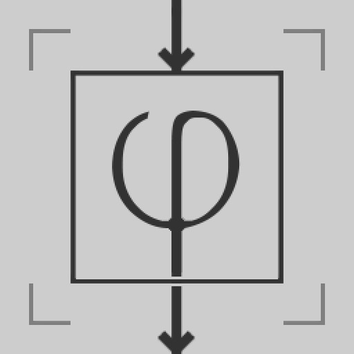
Activation Functions
Brief overview about some of the main activation functions applicable to Neural Networks and Deep Learning system.
view notebook -
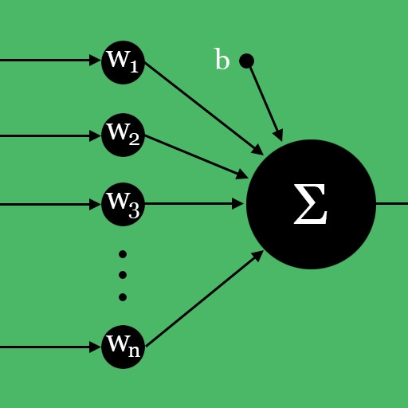
Perceptron
Overview and implementation of the most fundamental Neural Network model.
view notebook -

Binomial Distribution
Brief overview about Discrete probability and binomial distribution.
view notebook -
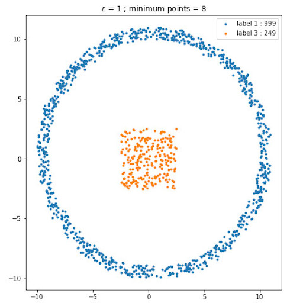
Clustering [DBSCAN]
Overview and implementation of clustering algorithm using the DBSCAN technique.
view notebook -
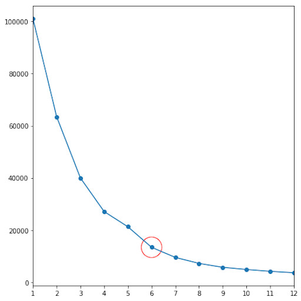
Clustering [k-means]
Overview and implementation of clustering algorithm using the k-means technique.
view notebook -
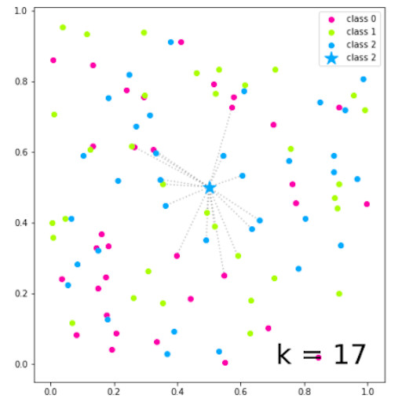
k-NN Classification
Overview and implementation of k-Nearest Neighbor Classification.
view notebook -
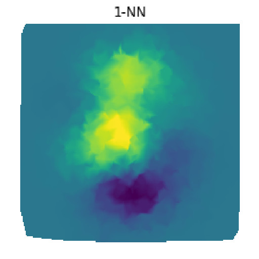
k-NN Regression
Overview and implementation of k-Nearest Neighbor regression.
view notebook -
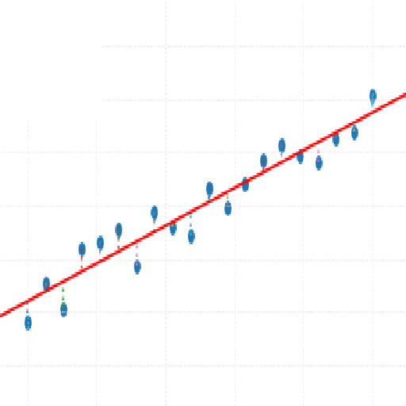
Linear Regression
Overview and implementation of Linear Regression analysis.
view notebook -
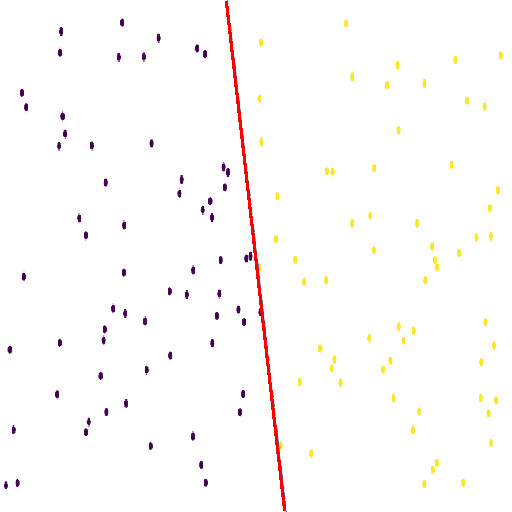
Logistic Regression
Overview and implementation of Logistic Regression analysis.
view notebook -
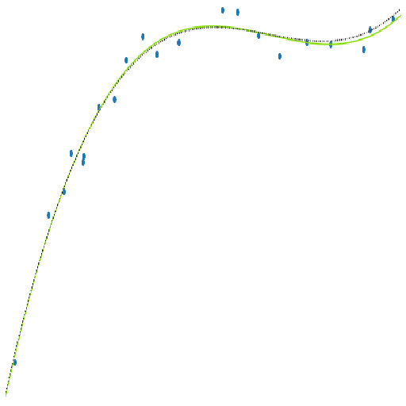
Polynomial Regression
Overview and implementation of Polynomial Regression analysis.
view notebook
Deep Learning Models
Demonstration and practice of the most popular Deep Learning models.
-
Basics [PyTorch]
Basic functions and operations using PyTorch library.
view notebook -
Basics [TensorFlow]
Basic functions and operations using TensorFlow library.
view notebook -
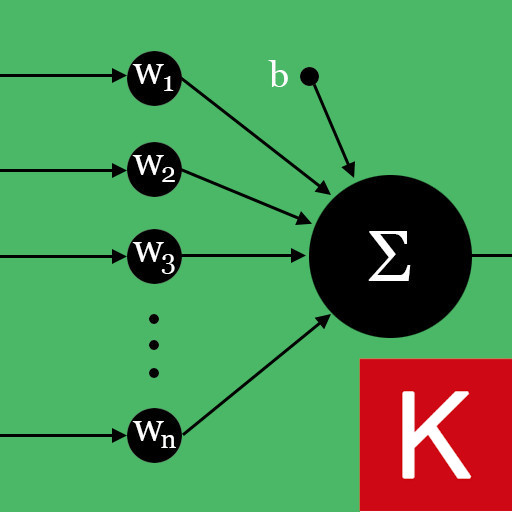
Perceptron [Keras]
Implementation of Perceptron model using using Keras library.
view notebook -
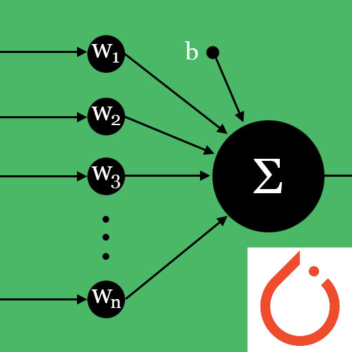
Perceptron [PyTorch]
Implementation of Perceptron model using using PyTorch library.
view notebook -
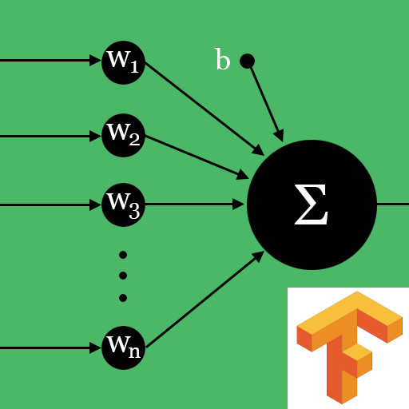
Perceptron [TensorFlow]
Implementation of Perceptron model using using TensorFlow library.
view notebook -
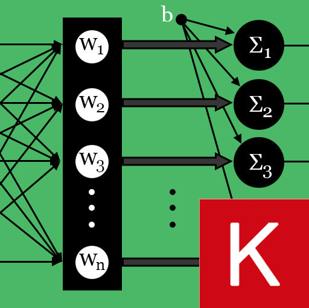
Multi-class Logistic Regression [Keras]
Implementation of Multi-class Logistic Regression using Keras library.
view notebook -
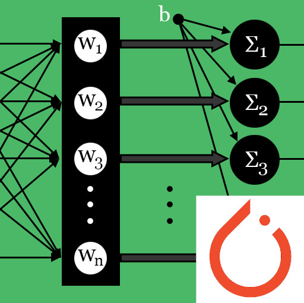
Multi-class Logistic Regression [PyTorch]
Implementation of Multi-class Logistic Regression using PyTorch library.
view notebook -
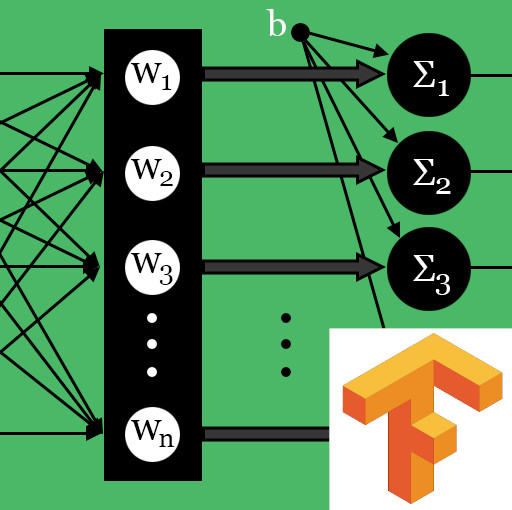
Multi-class Logistic Regression [TensorFlow]
Implementation of Multi-class Logistic Regression using TensorFlow library.
view notebook -
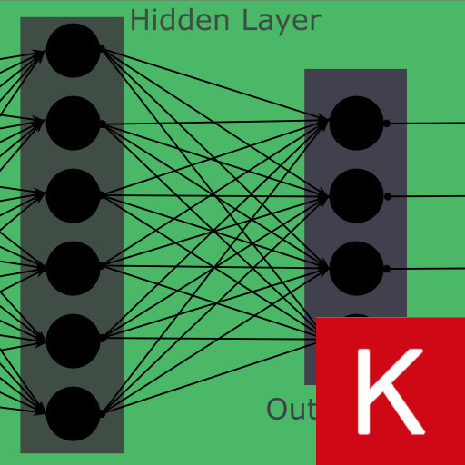
Shallow Neural Network [Keras]
Implementation of Shallow Neural Network using Keras library.
view notebook -
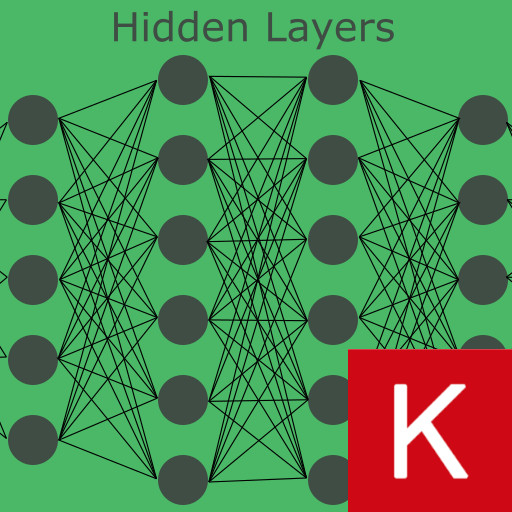
Deep Neural Network [Keras]
Implementation of Deep Neural Network using Keras library.
view notebook -
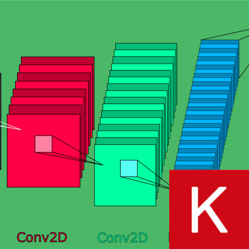
Convolutional Neural Network [Keras]
Implementation of Convolutional Neural Network using Keras library.
view notebook -
Autoencoder [Keras]
Implementation of Autoencoders using Keras library.
view notebook
Practical Applications
Practical experiments and creative applications using machine learning techniques.
-
Image Approximation
Image approximation and upscaling interpolation using deep Neural Network.
view notebook
Mathematical Foundations
Main mathematical concepts and numerical methods applied to Machine Learning.
-

Calculus - Fourier Series
Brief overview of Fourier series.
view notebook -

Linear Algebra - Vectors
Linear Algebra topic about Vectors.
view notebook -

Linear Algebra - Matrices
Linear Algebra topic about Matrices.
view notebook -

Numerical Integration
Overview and implementation of some numerical methods for definite integration.
view notebook -

Numerical Root Finding
Overview and implementation of some numerical methods for root finding.
view notebook -

Dissimilarity Measure
Overview about dissimilarity and distance measure.
view notebook -

Z Table
Study about standard normal distribution.
view notebook
High Performance Computing
Practices over high performance computing subjects such as parallel computing, gpu programming, code optimization and others.
-
![Basics [Numba]](images/thumb_basics_Numba.jpg)
Basics [Numba]
Basic functions and operations using Numba and Python.
view notebook -
![Basics [NumExpr]](images/thumb_basics_NumExpr.jpg)
Basics [NumExpr]
Basic functions and operations using NumExpr and Python.
view notebook -
![Basics [Cython]](images/thumb_basics_Cython.jpg)
Basics [Cython]
Basic functions and operations using Cython and Python.
view notebook -
![Basics [F2PY]](images/thumb_basics_F2PY.jpg)
Basics [F2PY]
Basic functions and operations using F2PY and Python.
view notebook